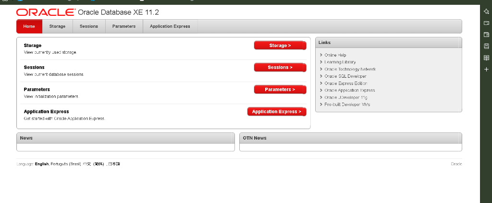

Semester Lab Exam: Assignments I to V
Clean, curriculum-exact reference for the university practical examination. Covers local host workspace initialization on http://127.0.0.1:8080/apex, 79 verified tasks across DDL, DML, single-row/date functions, group aggregations, and subqueries, paired with an interactive 3D SGA storage engine.
Oracle Database XE 11.2 & APEX Workspace Configuration

The web console provides direct entry to Storage, Sessions, Parameters, and Application Express (APEX). Lab examinations take place inside APEX SQL Commands.
Open browser to http://127.0.0.1:8080/apex. Sign in as administrative user:
oracle / manager)In APEX Admin, create student schema workspace for test isolation:
Log into workspace ECE_LAB. Navigate through the top bar to:
Enable Autocommit checkbox or run explicit COMMIT;.
If using SQL*Plus CLI in terminal:
SQL> ALTER USER ece_student ACCOUNT UNLOCK;
If port 8080 is blocked, re-bind the embedded XML DB listener to 8081 via SQL*Plus:
EXEC DBMS_XDB.SETHTTPPORT(8081);
COMMIT;Access APEX thereafter on http://127.0.0.1:8081/apex.
Oracle 11g Architecture: SGA Memory & Storage Slicer
Assignment I: DDL (Creating & Modifying Tables)
Create table EMP with Empno (PK, Number(4)), Ename (Varchar2(10), block letters check), Job (Varchar2(9)), Mgr (Number(4)), Hiredate (Date), Sal (Number(7,2), check 1500–50000), Comm (Number(7,2)).
-- 1. Create table EMP with class roll number suffix
CREATE TABLE EMP_20 (
empno NUMBER(4) PRIMARY KEY,
ename VARCHAR2(10) CHECK (ename = UPPER(ename)),
job VARCHAR2(9),
mgr NUMBER(4),
hiredate DATE,
sal NUMBER(7,2) CONSTRAINT chk_sal CHECK (sal BETWEEN 1500 AND 50000),
comm NUMBER(7,2)
);
-- 2. Verify schema
DESC EMP_20;-- 3. Modify EMP to add DEPTNO column
ALTER TABLE EMP_20 ADD (deptno INTEGER);
-- 4. Create table DEPT with location restricted to KOL/MUM/DEL
CREATE TABLE DEPT_20 (
deptno NUMBER(2) PRIMARY KEY,
dname VARCHAR2(10) CHECK (dname = UPPER(dname)),
location VARCHAR2(9) CHECK (location IN ('KOL', 'MUM', 'DEL')),
city VARCHAR2(30)
);
-- 5. Add referential integrity from EMP to DEPT
ALTER TABLE EMP_20 ADD CONSTRAINT fk_dept_20
FOREIGN KEY (deptno) REFERENCES DEPT_20(deptno);
-- 6. Modify DEPT to delete the CITY column
ALTER TABLE DEPT_20 DROP COLUMN city;
-- 7. Modify EMP to remove the constraint on SAL
ALTER TABLE EMP_20 DROP CONSTRAINT chk_sal;-- 8. Duplicate table structure & data
CREATE TABLE DEPT_DUP AS SELECT * FROM DEPT_20;
-- 9. Rename table
RENAME DEPT_DUP TO DUP_DEPT;
-- 10. Delete table
DROP TABLE DUP_DEPT;-- 12 & 13. RESTAURANT & MENU_ITEM with PK/FK and rating check (0 to 5)
CREATE TABLE RESTAURANT (
rest_id NUMBER(5) PRIMARY KEY,
rest_name VARCHAR2(50) NOT NULL,
city VARCHAR2(30),
rating NUMBER(2,1) CHECK (rating BETWEEN 0 AND 5)
);
CREATE TABLE MENU_ITEM (
item_id NUMBER(6) PRIMARY KEY,
rest_id NUMBER(5) REFERENCES RESTAURANT(rest_id),
item_name VARCHAR2(50) NOT NULL,
price NUMBER(7,2)
);
-- 14. Add is_veg column via ALTER
ALTER TABLE MENU_ITEM ADD (is_veg NUMBER(1) CHECK (is_veg IN (0,1)));
-- 15. Drop column city
ALTER TABLE RESTAURANT DROP COLUMN city;
💡 Mechanical Syntax Breakdown: ALTER TABLE MENU_ITEM ADD (is_veg NUMBER(1) CHECK (is_veg IN (0,1)));
▼
MENU_ITEM metadata in Oracle data dictionary. Requires exclusive table lock.
BOOLEAN column type. Single-digit integer (precision 1, scale 0) represents boolean flag (0=Non-Veg, 1=Veg).
ORA-02290 if any other value (e.g. 2, -1) is supplied.
Task 15 Oral Rule: DROP COLUMN modifies table definition by removing metadata descriptors, whereas TRUNCATE deallocates data extents from the tablespace while keeping the column structure intact.
Assignment II: DML (Insert, Update, Delete & Basic SELECT)
CREATE TABLE DEPARTMENT (
dept_id NUMBER(3) PRIMARY KEY,
dept_name VARCHAR2(50) NOT NULL
);
CREATE TABLE STUD_MEMBER (
roll_no NUMBER(5) PRIMARY KEY,
name VARCHAR2(50) NOT NULL,
dept_id NUMBER(3) REFERENCES DEPARTMENT(dept_id),
semester NUMBER(2),
contact_no VARCHAR2(15),
gender CHAR(1) CHECK (gender IN ('M', 'F', 'O'))
);
-- 5 Departments
INSERT INTO DEPARTMENT VALUES (101, 'Electronics');
INSERT INTO DEPARTMENT VALUES (102, 'Computer Science');
INSERT INTO DEPARTMENT VALUES (103, 'Electrical');
INSERT INTO DEPARTMENT VALUES (104, 'Mechanical');
INSERT INTO DEPARTMENT VALUES (105, 'Civil');
-- 11 Students
INSERT INTO STUD_MEMBER VALUES (2001, 'Ankur Roy', 101, 3, '9830112233', 'M');
INSERT INTO STUD_MEMBER VALUES (2002, 'Pooja Patra', 101, 3, '9830445566', 'F');
INSERT INTO STUD_MEMBER VALUES (2003, 'Ayan Sen', 102, 5, '9830778899', 'M');
INSERT INTO STUD_MEMBER VALUES (2004, 'Sneha Das', 103, 3, '9830001122', 'F');
INSERT INTO STUD_MEMBER VALUES (2005, 'Amit Paul', 103, 5, '9830334455', 'M');
INSERT INTO STUD_MEMBER VALUES (2006, 'Riya Ghosh', 101, 3, '9830667788', 'F');
INSERT INTO STUD_MEMBER VALUES (2007, 'Debanjan Deb', 102, 5, '9830990011', 'M');
INSERT INTO STUD_MEMBER VALUES (2008, 'Priyanka Sil', 102, 3, '9830223344', 'F');
INSERT INTO STUD_MEMBER VALUES (2009, 'Arnab Bose', 103, 5, '9830556677', 'M');
INSERT INTO STUD_MEMBER VALUES (2010, 'Subhojit Kar', 101, 3, '9830889900', 'M');
INSERT INTO STUD_MEMBER VALUES (2011, 'Trisha Dey', 101, 5, '9830113355', 'F');
COMMIT;-- 17. Names and contacts
SELECT name, contact_no FROM STUD_MEMBER;
-- 18 & 19. Duplicate and rename column
CREATE TABLE STUD_DETAILS AS SELECT * FROM STUD_MEMBER;
ALTER TABLE STUD_DETAILS RENAME COLUMN contact_no TO Ph_no;
-- 20. Update phone number
UPDATE STUD_DETAILS SET Ph_no = '03325345666' WHERE name = 'Pooja Patra';
COMMIT;
-- 21. Attempt NULL insertion on primary key (Triggers ORA-01400)
INSERT INTO STUD_MEMBER (name, dept_id) VALUES ('Rahul Das', 101);
/* Error Caught: ORA-01400: cannot insert NULL into ("STUD_MEMBER"."ROLL_NO") */
-- 22. Names & rolls from Electronics
SELECT s.name, s.roll_no
FROM STUD_MEMBER s
JOIN DEPARTMENT d ON s.dept_id = d.dept_id
WHERE d.dept_name = 'Electronics';
-- 23. Depts with student members vs without
SELECT DISTINCT d.dept_name FROM DEPARTMENT d
WHERE d.dept_id IN (SELECT dept_id FROM STUD_MEMBER);
SELECT d.dept_name FROM DEPARTMENT d
WHERE d.dept_id NOT IN (SELECT dept_id FROM STUD_MEMBER WHERE dept_id IS NOT NULL);
-- 24. Count Electrical members
SELECT COUNT(*) AS elec_count
FROM STUD_MEMBER s
JOIN DEPARTMENT d ON s.dept_id = d.dept_id
WHERE d.dept_name = 'Electrical';
-- 25. Name starts with 'A' and all male members
SELECT * FROM STUD_MEMBER WHERE name LIKE 'A%';
SELECT * FROM STUD_MEMBER WHERE gender = 'M';
💡 Mechanical Syntax Breakdown: CTAS Table Duplication & ORA-01400 (PK NULL Trap)
▼
NOT NULL constraints; it does NOT inherit PRIMARY KEY, FOREIGN KEY, or CHECK constraints from source table!
INSERT INTO STUD_MEMBER (name, dept_id), roll_no was omitted from column list, defaulting to NULL. Oracle kernel rejects before buffer write because PK implicitly asserts NOT NULL.
NOT IN returns even a single NULL, the comparison x != NULL evaluates to UNKNOWN, causing the entire outer query to return zero rows! Adding WHERE dept_id IS NOT NULL neutralizes this trap.
CREATE TABLE ORDERS (
order_id NUMBER(7) PRIMARY KEY,
rest_id NUMBER(5) REFERENCES RESTAURANT(rest_id),
customer_name VARCHAR2(50) NOT NULL,
amount NUMBER(8,2),
status VARCHAR2(20) CHECK (status IN ('placed', 'preparing', 'delivered', 'cancelled')),
order_date DATE DEFAULT SYSDATE
);
INSERT INTO ORDERS VALUES (501, 101, 'Souvik Roy', 450.00, 'placed', SYSDATE - 2);
INSERT INTO ORDERS VALUES (502, 101, 'Ananya Sen', 820.00, 'delivered', SYSDATE - 1);
INSERT INTO ORDERS VALUES (503, 102, 'Rohit Sharma', 290.00, 'cancelled', SYSDATE);
COMMIT;
-- Update, delete and distinct
UPDATE ORDERS SET status = 'delivered' WHERE order_id = 501;
DELETE FROM ORDERS WHERE status = 'cancelled';
SELECT DISTINCT rest_id FROM ORDERS;Assignment III: Filtering, Sorting & Built-in Functions
INSERT INTO EMP_20 VALUES (7839, 'KING', 'PRESIDENT', NULL, TO_DATE('17-NOV-1981', 'DD-MON-YYYY'), 5000, NULL, 10);
INSERT INTO EMP_20 VALUES (7698, 'BLAKE', 'MANAGER', 7839, TO_DATE('01-MAY-1981', 'DD-MON-YYYY'), 2850, NULL, 30);
INSERT INTO EMP_20 VALUES (7782, 'CLARK', 'MANAGER', 7839, TO_DATE('09-JUN-1981', 'DD-MON-YYYY'), 2450, NULL, 10);
INSERT INTO EMP_20 VALUES (7566, 'JONES', 'MANAGER', 7839, TO_DATE('02-APR-1981', 'DD-MON-YYYY'), 2975, NULL, 20);
INSERT INTO EMP_20 VALUES (7654, 'MARTIN', 'SALESMAN', 7698, TO_DATE('28-SEP-1981', 'DD-MON-YYYY'), 1250, 1400, 30);
INSERT INTO EMP_20 VALUES (7499, 'ALLEN', 'SALESMAN', 7698, TO_DATE('20-FEB-1981', 'DD-MON-YYYY'), 1600, 300, 30);
INSERT INTO EMP_20 VALUES (7844, 'TURNER', 'SALESMAN', 7698, TO_DATE('08-SEP-1981', 'DD-MON-YYYY'), 1500, 0, 30);
INSERT INTO EMP_20 VALUES (7900, 'JAMES', 'CLERK', 7698, TO_DATE('03-DEC-1981', 'DD-MON-YYYY'), 950, NULL, 30);
INSERT INTO EMP_20 VALUES (7521, 'WARD', 'SALESMAN', 7698, TO_DATE('22-FEB-1981', 'DD-MON-YYYY'), 1250, 500, 30);
INSERT INTO EMP_20 VALUES (7902, 'FORD', 'ANALYST', 7566, TO_DATE('03-DEC-1981', 'DD-MON-YYYY'), 3000, NULL, 20);
INSERT INTO EMP_20 VALUES (7369, 'SMITH', 'CLERK', 7902, TO_DATE('17-DEC-1980', 'DD-MON-YYYY'), 800, NULL, 20);
INSERT INTO EMP_20 VALUES (7788, 'SCOTT', 'ANALYST', 7566, TO_DATE('09-DEC-1982', 'DD-MON-YYYY'), 3000, NULL, 20);
INSERT INTO EMP_20 VALUES (7876, 'ADAMS', 'CLERK', 7788, TO_DATE('12-JAN-1983', 'DD-MON-YYYY'), 1100, NULL, 20);
INSERT INTO EMP_20 VALUES (7934, 'MILLER', 'CLERK', 7782, TO_DATE('23-JAN-1982', 'DD-MON-YYYY'), 1300, NULL, 10);
COMMIT;-- 32. All columns; then ename, sal, deptno
SELECT * FROM EMP_20;
SELECT ename, sal, deptno FROM EMP_20;
-- 33. Salary + 300 without altering table
SELECT ename, sal, (sal + 300) AS new_sal FROM EMP_20;
-- 35. Annual compensation: (12 * sal) + 100
SELECT ename, ((12 * sal) + 100) AS annual_comp FROM EMP_20;
-- 36. Concatenation sentence
SELECT ename || ' is a ' || job AS "Employee Details" FROM EMP_20;
-- 37. Distinct department numbers
SELECT DISTINCT deptno FROM EMP_20;
-- 38. CLERKS; and everyone except MANAGERS
SELECT ename, job, deptno FROM EMP_20 WHERE job = 'CLERK';
SELECT ename, sal, comm FROM EMP_20 WHERE job != 'MANAGER';
-- 39. Salary between 1000 and 2000
SELECT ename, sal FROM EMP_20 WHERE sal BETWEEN 1000 AND 2000;
-- 40. Specific manager empnos
SELECT ename, mgr FROM EMP_20 WHERE mgr IN (7802, 7566, 7788);
-- 41. Pattern matching
SELECT ename FROM EMP_20 WHERE ename LIKE 'S%';
SELECT ename FROM EMP_20 WHERE ename LIKE '%R';
-- 42. Percentage increases
UPDATE EMP_20 SET sal = sal * 1.05;
UPDATE EMP_20 SET sal = sal * 1.15 WHERE job = 'MANAGER';
COMMIT;-- 43. Replace NULL commission with 200
UPDATE EMP_20 SET comm = 200 WHERE comm IS NULL;
-- 44. Updatable view for deptno = 10
CREATE OR REPLACE VIEW emp_dept10_vw AS
SELECT empno, ename, deptno FROM EMP_20 WHERE deptno = 10;
INSERT INTO emp_dept10_vw VALUES (8001, 'SARKAR', 10);
SELECT * FROM EMP_20 WHERE empno = 8001;
-- 45. Built-in Oracle date arithmetic functions
SELECT
ROUND(MONTHS_BETWEEN(SYSDATE, hiredate)) AS scott_months,
LAST_DAY(hiredate) AS month_end,
NEXT_DAY(hiredate, 'MONDAY') AS next_mon,
ADD_MONTHS(hiredate, 2) AS plus_two_months,
(hiredate + 8) AS plus_eight_days
FROM EMP_20 WHERE ename = 'SCOTT';
💡 Mechanical Syntax Breakdown: Oracle Date Functions (MONTHS_BETWEEN, NEXT_DAY, LAST_DAY)
▼
ROUND() for whole integers.
NLS_DATE_LANGUAGE.
INSERT/UPDATE/DELETE) straight to the underlying physical table (EMP_20).
Assignment IV: Aggregate Functions, GROUP BY & Set Operators
-- 50. Number of employees and average salary per department
SELECT
d.deptno,
d.dname,
COUNT(e.empno) AS emp_count,
NVL(ROUND(AVG(e.sal), 2), 0) AS avg_sal
FROM DEPT_20 d
LEFT JOIN EMP_20 e ON d.deptno = e.deptno
GROUP BY d.deptno, d.dname
ORDER BY d.deptno;
-- 51. Total salary payable
SELECT deptno, SUM(sal) AS total_sal FROM EMP_20 GROUP BY deptno;
-- 52 & 53. WHERE filter (sal > 5000) followed by HAVING filter (avg > 6500)
SELECT deptno, COUNT(*) AS emp_cnt, ROUND(AVG(sal), 2) AS dept_avg
FROM EMP_20
WHERE sal > 5000
GROUP BY deptno
HAVING AVG(sal) > 6500;WHERE vs HAVING Lifecycle: WHERE evaluates before grouping, filtering individual row tuples. HAVING evaluates after grouping, filtering the computed aggregate bucket metrics.
💡 Mechanical Syntax Breakdown: WHERE vs HAVING Execution Pipeline
▼
COUNT(*), ROUND(AVG(sal), 2)) for transmission to client cursor.
-- 54. Dynamic email based on dept range
ALTER TABLE EMP_20 ADD (email_id VARCHAR2(60));
UPDATE EMP_20 SET email_id =
LOWER(ename) ||
CASE
WHEN deptno < 1000 THEN '@oracle.com'
WHEN deptno < 5000 THEN '@oracle.co.uk'
ELSE '@oracle.co.in'
END;
COMMIT;
-- 55. PF = 10% of salary
SELECT ename, sal, (sal * 0.10) AS pf_amount FROM EMP_20;
-- 56. Service > 20 years
SELECT ename, hiredate FROM EMP_20
WHERE MONTHS_BETWEEN(SYSDATE, hiredate)/12 > 20;
-- 57. Name starts or ends with 'S'
SELECT ename FROM EMP_20 WHERE ename LIKE 'S%' OR ename LIKE '%S';
-- 58. Add Company President tuple
INSERT INTO EMP_20 (empno, ename, hiredate, job, deptno, sal)
VALUES (10000, 'SCOTT TIGER', TO_DATE('01-FEB-2014', 'DD-MON-YYYY'), 'PR_Prsdnt', 20, 50000);
COMMIT;| Property | DELETE Statement | TRUNCATE Statement |
|---|---|---|
| Category | DML | DDL |
| Rollback Support | Yes (writes full undo vectors) | No (implicit auto-commit) |
| High Water Mark | HWM remains high; space not freed | Resets HWM to 0; space deallocated |
UNION ALL Advantage: Avoids the disk sort phase required by UNION to deduplicate rows. When combining separate daily order partitions, primary keys cannot collide; UNION ALL is optimal.
Assignment V: Joins & Subqueries
-- 64. Employee name, department name and job title
SELECT e.ename, d.dname, e.job
FROM EMP_20 e
JOIN DEPT_20 d ON e.deptno = d.deptno;
-- 65. Department metrics with distinct jobs
SELECT
d.dname,
COUNT(e.empno) AS emp_count,
ROUND(AVG(e.sal), 2) AS avg_sal,
COUNT(DISTINCT e.job) AS distinct_jobs
FROM DEPT_20 d
LEFT JOIN EMP_20 e ON d.deptno = e.deptno
GROUP BY d.dname;
-- 66. COUNT(*) counts all rows; COUNT(comm) skips NULL values
SELECT COUNT(*) AS total_rows, COUNT(comm) AS comm_rows FROM EMP_20;
-- 67. Group by first letter descending
SELECT SUBSTR(ename, 1, 1) AS initial, COUNT(*) AS cnt
FROM EMP_20
GROUP BY SUBSTR(ename, 1, 1)
ORDER BY initial DESC;-- 68. Books published in 2000
SELECT acc_no FROM BOOK WHERE yr_publication = 2000;
-- 69. Title of book borrowed by borrower 'X'
SELECT b.title
FROM BOOK b
JOIN BORROW br ON b.acc_no = br.acc_no
JOIN LIB_USER u ON br.card_no = u.card_no
WHERE u.borrower_name = 'X';
-- 70. Borrowers in same city as 'X'
SELECT u1.borrower_name FROM LIB_USER u1
WHERE u1.borrower_city = (SELECT u2.borrower_city FROM LIB_USER u2 WHERE u2.borrower_name = 'X')
AND u1.borrower_name != 'X';
-- 71. Borrowers who issued books on a given date
SELECT borrower_name, borrower_address FROM LIB_USER
WHERE card_no IN (SELECT card_no FROM BORROW WHERE date_of_issue = TO_DATE('10-NOV-2026', 'DD-MON-YYYY'));
-- 72. Books published in 2010 titled 'DBMS'
SELECT acc_no FROM BOOK WHERE yr_publication = 2010 AND title = 'DBMS';-- 73. Junior students enrolled in class taught by faculty Dr. Roy
SELECT DISTINCT s.sname
FROM STUDENT s
JOIN ENROLLED e ON s.snum = e.snum
JOIN CLASS c ON e.cname = c.name
JOIN FACULTY f ON c.fid = f.fid
WHERE s.level = 'Junior' AND f.fname = 'Dr. Roy';
-- 74. Oldest student majoring in History
SELECT MAX(age) AS oldest_history_student FROM STUDENT WHERE major = 'History';
-- 75. Classes meeting in room R1 OR having >= 5 students
SELECT name FROM CLASS WHERE room = 'R1'
UNION
SELECT cname FROM ENROLLED GROUP BY cname HAVING COUNT(*) >= 5;
💡 Mechanical Syntax Breakdown: 4-Table Multi-Relational Join Pipeline
▼
s.snum = e.snum. Connects individual student identity tuples to their course enrollments.
e.cname to class entity c.name.
c.fid to faculty table f.fid.
-- 76. Join ORDERS, RESTAURANT and RIDER
SELECT o.order_id, r.rest_name, rd.rider_name, o.amount, o.status
FROM ORDERS o
JOIN RESTAURANT r ON o.rest_id = r.rest_id
JOIN RIDER rd ON o.rider_id = rd.rider_id;
-- 77. Restaurants with no orders
SELECT r.rest_name
FROM RESTAURANT r
LEFT JOIN ORDERS o ON r.rest_id = o.rest_id
WHERE o.order_id IS NULL;
-- 78. Correlated Subquery: Riders delivering more than citywide average
SELECT rd.rider_id, rd.rider_name, rd.city
FROM RIDER rd
WHERE (
SELECT COUNT(*) FROM ORDERS o WHERE o.rider_id = rd.rider_id
) > (
SELECT AVG(rider_orders) FROM (
SELECT COUNT(*) AS rider_orders
FROM ORDERS o2
JOIN RIDER rd2 ON o2.rider_id = rd2.rider_id
WHERE rd2.city = rd.city
GROUP BY o2.rider_id
)
);Live SQL Execution Console
Top 10 Viva Voce Traps & Mechanics
Any insert with lowercase letters evaluates the predicate to FALSE, triggering ORA-02290. String literals must be uppercase.
Oracle treats empty strings '' as NULL. Testing WHERE col = '' returns zero tuples; write WHERE col IS NULL.
Fails with ORA-02266 if an active foreign key references the table, even if the child table contains zero rows. Disable FK constraint first.
NVL(a, b) returns $b$ if $a$ is null. NVL2(a, b, c) returns $b$ if $a$ is not null, and $c$ if $a$ is null.
DELETE removes rows but leaves the HWM unchanged, meaning full table scans still read all historical blocks. TRUNCATE resets HWM back to block 0.
A NULL inside a NOT IN list causes the comparison to evaluate to UNKNOWN, returning 0 rows. Always filter WHERE col IS NOT NULL in subqueries.
ROWNUM is assigned after a row passes WHERE filtering. Testing ROWNUM = 2 always fails because candidate row 1 is discarded, resetting the counter.
Oracle DATE is a 7-byte binary structure storing Century, Year, Month, Day, Hour, Minute, and Second. It always retains time.